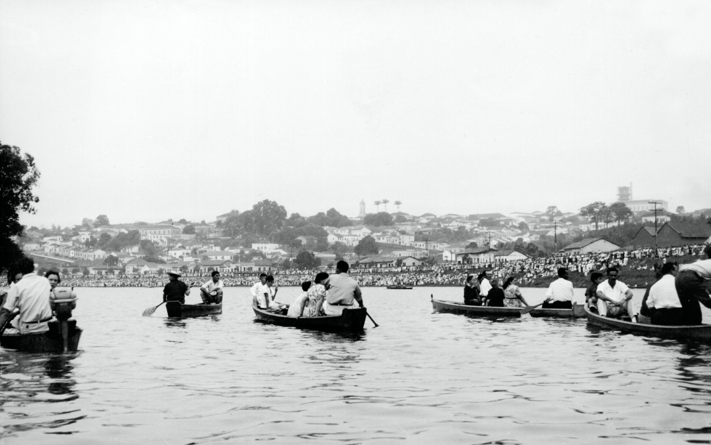

What happens along the banks of the Piracicaba?
Floods, riparian vegetation, and a city that learned to live along the Piracicaba.
Follow the story Collection: IHGP · Flickr ↗︎01 · When the river rises
In Piracicaba, flooding is a risk. But it is also part of the city’s relationship with the river.
Civil Defense monitors the Piracicaba because overflow reaches well-known areas of the city. Rua do Porto, Beira Rio, Bongue, Cruzeiro do Sul, and Jaime Pereira are among the officially monitored locations.
The alert system itself shows that flooding is not an abnormal behavior of the river. It is an expected condition. The urban challenge is deciding where the water can go without turning the entire floodplain into damage.
Current reference: Piracicaba Civil Defense · Feb. 11, 2026 ↗
Reference levels published by Civil Defense in February 2026.
02 · The floodplain that almost became a neighborhood
Before it became a park, part of Rua do Porto was planned as a housing subdivision.
The conflict between city and river becomes very concrete in the 1960s and 1970s: building on the floodplain meant building precisely where the Piracicaba spreads when it overflows.
The subdivision was approved in 1967. A significant portion of the lots lay within the river’s major floodplain. In 1970, one of the Piracicaba’s major floods inundated much of the area planned for residential occupation. The event does not explain the later transformation by itself, but it made the incompatibility between that floodplain and the proposed urbanization visible.
Main source: Piracicaba, the river and the city: actions of reconnection · IPPLAP, pp. 72 and 81 ↗.
03 · The change appears in the newspapers
In eight years, the headline shifts from the flood to the transformation of the riverfront.
“It is the biggest flood: it may be the last”
The flood enters public memory and exposes the vulnerability of occupying the floodplain.
“Rua do Porto declared an area of public utility”
The discussion moves beyond the disaster itself and begins to include the urban future of the riverbank.
“Rua do Porto begins to be transformed into a large recreation area”
The flood-prone land begins to take on the public role that still shapes the city’s image.
Edition, date, and page references were preserved by IPPLAP’s historical survey. The newspaper pages are not reproduced here.
04 · Working with the river
“Work with the river and no longer against it.”
This phrase appears in the Beira-Rio Project’s Structuring Action Plan. The anthropological diagnosis that preceded the plan treated river and city as a single biocultural system.
In the first intervention, flooding was treated as an unavoidable natural phenomenon. The riverside path was positioned using flow records, and riparian vegetation entered the urban design as part of riverfront restoration.
Beira-Rio Project · Action Plan · “The face of Piracicaba” diagnosis ↗
City Hall · Beira-Rio Project, completed stages and environmental adaptation ↗
05 · Restoring the riverbank and basin
Riparian vegetation alone cannot prevent a major flood. But restoring the riverbank changes how the basin functions.
Riparian vegetation helps stabilize banks, reduce erosion, protect springs, and create ecological continuity. In Piracicaba and the wider region, restoration occurs at different scales — and the figures should not be added together as if they belonged to a single program.
native seedlings
Planted across 21 hectares of protected riparian areas on 11 properties in the Ribeirão dos Marins microbasin.
Planting carried out in 2022 · municipal monitoring in 2024.seedlings since 2021
The regional project reported 115 hectares restored and actions around 27 springs in six municipalities.
Regional figure published by ESALQ/USP in August 2026.seedlings per year
Annual capacity expected to be made available by the Municipal Nursery under an agreement with the PCJ Consortium.
Quantity subject to the nursery’s production capacity.Sources: Piracicaba PES ↗ · Corredor Caipira / ESALQ ↗ · City Hall–PCJ Consortium agreement ↗.
proposal under discussion · 2026
210.509
m² in the proposed redevelopment of Beira Rio and the Rua do Porto riverfront
The discussion about the riverfront continues.
The proposal presented in March 2026 organizes the area into recreation, tourism, environment, sports, and culture sectors. It includes landscaping with native species and about 8.5 km of cycle lanes.
It is a proposal, not a completed project. The project was presented for public consultation and may change.
06 · Why protect this relationship?
Because in Piracicaba, the river is not just scenery.
The Beira-Rio diagnosis called this relationship a “bio-cultural system”: the river appears in food, music, customs, folklore, and the images the city creates of itself.
The riverbank is where religion, work, leisure, and public memory meet. That is why restoring the river also means preserving practices that depend on the physical presence of water within urban life.
In 2026, the bicentennial celebration returned to Largo dos Pescadores. The festival is recognized as municipal intangible cultural heritage.
Recognized in 2025 as intangible cultural heritage and registered by Codepac in 2026.
In 2026, the tradition entered the municipality’s Official Events Calendar for the second half of January.
Sources: 200th Festa do Divino ↗ · Codepac · intangible heritage ↗ · Law 10,505/2026 · River tubing ↗.
“My religion is the Piracicaba River.”Elias Rocha, known as Elias dos Bonecos · interview quoted in an anthropological study published in Horizontes Antropológicos.
Work with the river.
Not against it.
Sources and methodology.
The episode combines urban planning, press records, Beira-Rio Project documents, restoration actions, and cultural records. Municipal and regional figures are kept separate to avoid improper aggregation.